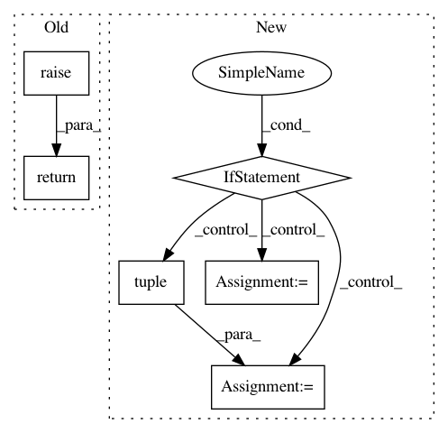

30efaaa572d798212c926e5b2edbf2b0fe7fa2f1,opennmt/decoders/rnn_decoder.py,AttentionalRNNDecoder,_get_initial_state,#AttentionalRNNDecoder#Any#Any#Any#,117
Before Change
if tf.executing_eagerly():
raise RuntimeError("Attention-based RNN decoder are currently not compatible "
"with eager execution")
initial_cell_state = super(AttentionalRNNDecoder, self)._get_initial_state(
batch_size, dtype, initial_state=initial_state)
attention_mechanism = self.attention_mechanism_class(
self.cell.output_size,
self.memory,
memory_sequence_length=self.memory_sequence_length,
dtype=self.memory.dtype)
if self.first_layer_attention:
self.cell.cells[0] = tfa.seq2seq.AttentionWrapper(
self.cell.cells[0],
attention_mechanism,
attention_layer_size=self.cell.cells[0].output_size,
initial_cell_state=initial_cell_state[0])
else:
self.cell = tfa.seq2seq.AttentionWrapper(
self.cell,
attention_mechanism,
attention_layer_size=self.cell.output_size,
initial_cell_state=initial_cell_state)
return self.cell.get_initial_state(batch_size=batch_size, dtype=dtype)
def step(self,
inputs,
timestep,
After Change
self.memory,
memory_sequence_length=self.memory_sequence_length)
decoder_state = self.cell.get_initial_state(batch_size=batch_size, dtype=dtype)
if initial_state is not None:
if self.first_layer_attention:
cell_state = list(decoder_state)
cell_state[0] = decoder_state[0].cell_state
cell_state = self.bridge(initial_state, cell_state)
cell_state[0] = decoder_state[0].clone(cell_state=cell_state[0])
decoder_state = tuple(cell_state)
else:
cell_state = self.bridge(initial_state, decoder_state.cell_state)
decoder_state = decoder_state.clone(cell_state=cell_state)
return decoder_state
def step(self,
inputs,
In pattern: SUPERPATTERN
Frequency: 3
Non-data size: 6
Instances
Project Name: OpenNMT/OpenNMT-tf
Commit Name: 30efaaa572d798212c926e5b2edbf2b0fe7fa2f1
Time: 2019-07-15
Author: guillaume.klein@systrangroup.com
File Name: opennmt/decoders/rnn_decoder.py
Class Name: AttentionalRNNDecoder
Method Name: _get_initial_state
Project Name: cornellius-gp/gpytorch
Commit Name: ccc913a65e08bc5523eb2490d3177c472b55d094
Time: 2018-02-01
Author: gpleiss@gmail.com
File Name: gpytorch/lazy/sum_batch_lazy_variable.py
Class Name: SumBatchLazyVariable
Method Name: __getitem__
Project Name: analysiscenter/batchflow
Commit Name: 19a19478d2dc1cdff7321f156512f66dbd6c5dd6
Time: 2017-06-07
Author: rhudor@gmail.com
File Name: dataset/batch.py
Class Name: ImagesBatch
Method Name: load